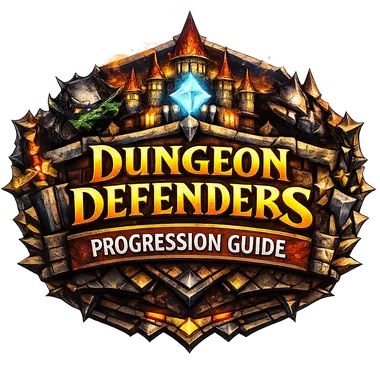

Progression Optimizer
Enter your current Dungeon Defenders 1 progress and the optimizer will suggest what you should do next.
Player Info
Recommendation
Fill out the form and click “Get Recommendation.”

Enter your current Dungeon Defenders 1 progress and the optimizer will suggest what you should do next.
Fill out the form and click “Get Recommendation.”